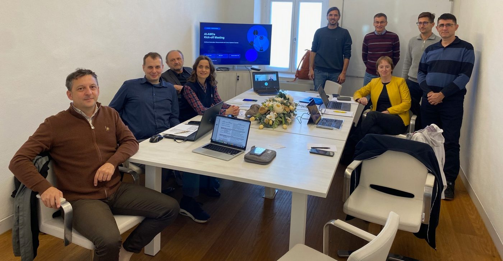

Kick-off meeting in Maribor
The AI-AMCe partners met at the University of Maribor's Faculty of Electrical Engineering and Computer Science on 27 October 2026 for the project's kick-off meeting.
The programme covered project management, the work packages and the responsibilities of each partner, quality and risk management, and communication and dissemination.
The technical session dealt with the link between WP2 and WP3, in particular how exercises should be described so that the AI system can use them. In the first months, partners will work on a common exercise template and metadata structure.
